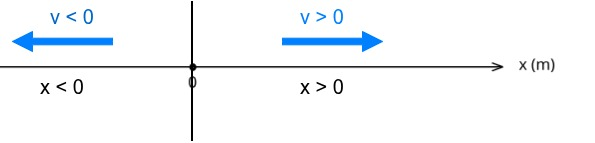

Cinemática: velocidad
1 Rapidez y velocidad
No es lo mismo ir rápido (rapidez) que saber hacia dónde vas con esa rapidez (velocidad).
- Rapidez: cuánto de rápido se mueve. Unidad: \(\dfrac{m}{s}\).
- Velocidad: rapidez + sentido de esa velocidad. También se mide en \(\dfrac{m}{s}\) y el signo indicará si va hacia la derecha (+) o a la izquierda (-).

El sentido indica si va hacia la derecha (velocidad positiva) o hacia la izquierda (velocidad negativa) según el criterio de signos indicado. Se representa con una flecha. La longitud de esa flecha, que es el módulo (el valor númerico sin signo), sería la rapidez.
Normalmente vamos a usar el término velocidad, pero eso implica que tenemos que tener cuidado con los signos que nos salgan:
- El desplazamiento \(\Delta x\) puede ser positivo o negativo.
- El tiempo siempre será positivo.
1.1 Despejar las magnitudes de la fórmula
Es muy importante saber cómo calcular la velocidad, y además saber despejar todas las variables de la fórmula.
Velocidad:
\(\large v = \dfrac{s}{t}\). Se mide en metros por segundo (\(\frac{m}{s}\))Despejar a partir de la velocidad el espacio:
\(v = \dfrac{s}{t} \rightarrow v·t = s\). Se mide en metros (m).Despejar a partir de la velocidad el tiempo:
\(v = \dfrac{s}{t} \rightarrow v·t = s \rightarrow t = \dfrac{s}{v}\). Se mide en segundos (s).
1.2 Unidades de velocidad: \(\frac{m}{s}\) y \(\frac{km}{h}\)
En general es mejor escribir \(\dfrac{m}{s}\) en vez de \(m/s\) y mejor \(\dfrac{km}{h}\) que \(km/h\) porque así sabemos sin duda cuál es el denominador.
Es muy útil aprender a cambiar entre las diferentes unidades de velocidad y lo haremos con factores de conversión:
Conversión de \(\dfrac{m}{s}\) a \(\dfrac{km}{h}\)
\[ 1\dfrac{m}{s} = \dfrac{1\ m}{s} · \dfrac{1\ km}{1000\ m} · \dfrac{60·60\ s}{1\ h}= \dfrac{3600\ km}{1000\ h} = 3,6 \dfrac{km}{h} \]
Conversión de \(\dfrac{km}{h}\) a \(\dfrac{m}{s}\)
\[ 1\dfrac{km}{h} = \dfrac{1\ km}{h} · \dfrac{1000\ m}{1\ km} · \dfrac{1\ h}{3600\ s} = \dfrac{1000\ m}{3600\ s} = \dfrac{1}{3,6}\dfrac{m}{s} \]
Ejercicios de cambio de unidades
- Convierte \(15 m/s\) en \(km/h\).
- Convierte \(90 km/h\) en \(m/s\).
1. Convierte \(15 m/s\) en \(km/h\). \[ 15 \dfrac{m}{s} · \dfrac{1 \, km}{1000 \, m} · \dfrac{3600 \, s}{1 \, h}= \] \[ = 15 · \dfrac{3600}{1000} \dfrac{km}{h} = \]
\[ = 15 · 3.6 = 54 \dfrac{km}{h} \]
- Resultado: \(15 \dfrac{m}{s} = 54 \dfrac{km}{h}\).
\[ \\ \\ \]
2. Convierte \(90 km/h\) en \(m/s\).
\[ 90 \dfrac{km}{h} · \dfrac{1000 \, m}{1 \, km} · \dfrac{1 \, h}{3600 \, s} = \]
\[ = 90 · \dfrac{1000}{3600} \dfrac{m}{s} = \]
\[ = \dfrac{90}{3.6} = 25 \dfrac{m}{s} \]
- Resultado: \(90 \dfrac{km}{h} = 25 \dfrac{m}{s}\)
1.3 Problemas de velocidad
1. El Autobús de la Castellana. Un autobús de la EMT recorre los 6 km que separan la Plaza de Colón de las Cuatro Torres. Si el trayecto lo realiza en línea recta (sin paradas) y tarda exactamente 15 minutos (0,25 horas), ¿a qué velocidad media circula el autobús en km/h?
Aplicamos la fórmula: \(v = \dfrac{d}{t}\)
\(v = \dfrac{6 \text{ km}}{0,25 \text{ h}} = 24 \text{ km/h}\)
2. El patinete por el Retiro. Un chico recorre el Paseo de Fernán Núñez en el Parque del Retiro, que tiene una longitud de 750 metros, en su patinete eléctrico. Si tarda 150 segundos en completar el recorrido a ritmo constante, ¿cuál es su velocidad en metros por segundo (m/s)?
\(v = \dfrac{d}{t}\)
\(v = \dfrac{750 \text{ m}}{150 \text{ s}} = 5 \text{ m/s}\)
3. El Metro de Madrid (Línea 1). Un tren de metro se encuentra en la posición \(x_i = 200 \text{ m}\) (tomando como origen la Puerta del Sol). Unos segundos después, se encuentra en la posición \(x_f = 1400 \text{ m}\) (cerca de la estación de Bilbao). Si ha tardado 80 segundos en pasar de un punto a otro, calcula primero el desplazamiento y luego su velocidad en m/s.
- Calculamos el desplazamiento (\(\Delta x\)): \(x_f - x_i = 1400 - 200 = 1200 \text{ m}\)
- Calculamos la velocidad: \(v = \dfrac{\Delta x}{t} = \dfrac{1200 \text{ m}}{80 \text{ s}} = 15 \text{ m/s}\)
4. De Compras por la Gran Vía. Dos amigos están paseando. Empiezan en el número 1 de la Gran Vía (posición \(0 \text{ m}\)) y caminan hasta la Plaza de España, que está en la posición \(1300 \text{ m}\). Si tardan 20 minutos (\(1200 \text{ s}\)) en llegar, calcula el desplazamiento y la velocidad media en m/s.
- Desplazamiento: \(1300 \text{ m} - 0 \text{ m} = 1300 \text{ m}\)
- Velocidad: \(v = \dfrac{1300 \text{ m}}{1200 \text{ s}} \approx 1,08 \text{ m/s}\)
5. El Cercanías a Alcalá de Henares Un tren de Cercanías viaja desde la estación de Atocha hacia Alcalá de Henares con una velocidad constante de 90 km/h. Si el trayecto dura 20 minutos (es decir, \(1/3\) de hora o \(0,33 \text{ h}\)), ¿qué distancia ha recorrido el tren?
- Escribimos la ecuación de la velocidad: \(v=\dfrac{d}{t}\).
- Despejamos el desplazamiento a partir de la ecuación anterior (como \(t\) está dividiendo lo pasamos al otro lado multiplicando): \(v·t=d \rightarrow d = v \cdot t\)
- Calculamos con valores numéricos: \(d = 90 \text{ km/h} \cdot 0,333 \text{ h} = 30 \text{ km}\)
6. Viaje a Segovia en Coche Una familia decide ir de Madrid a Segovia por la autopista. La distancia es de 90 km. Si mantienen una velocidad media constante de 120 km/h (el máximo legal), ¿cuánto tiempo tardarán en llegar a su destino en horas y minutos?
- Escribimos la ecuación de la velocidad: \(v=\dfrac{d}{t}\).
- Para no equivocarnos lo primero que hacemos es quitar el denominador que es el \(t\) y luego despejamos \(t\). ¡¡Mucho cuidado que si no seguis los pasos os sale al revés!! \[ v=\dfrac{d}{t} \rightarrow v·t = d \rightarrow t=\dfrac{d}{v} \]
- Sustituimos los valores numéricos y calculamos: \(t = \dfrac{90 \text{ km}}{120 \text{ km/h}} = 0,75 \text{ horas}\)
- Para pasar a minutos cogemos la parte del tiempo que no es entera (la parte entera son horas), y la multiplicamos por 60 porque cada hora tiene 60 minutos: \[ t = 0,75 h \rightarrow 0,75 h · \dfrac{60 min}{1 h} = 45 \text{ minutos} \]
2 Recursos adicionales
English video Motion in one dimension